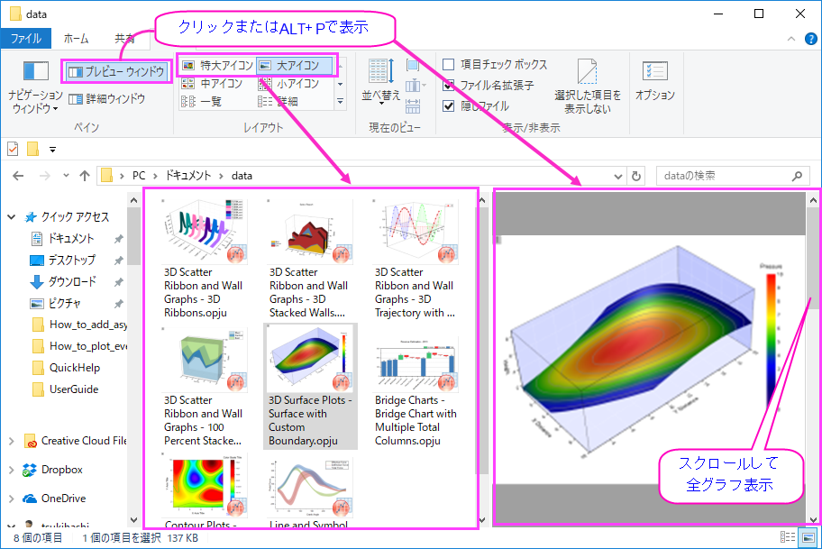

Windowsファイルエクスプローラを使用したプロジェクトのプレビュー
Windows-File-Explorer-Preview
Windowsファイルエクスプローラ（以前のWindowsエクスプローラ）を使用して、プロジェクトファイル内のグラフをプレビューできます。
-
- 
- Windowsエクスプローラの大または特大（ファイルエクスプローラで右クリックし、表示：大アイコンまたは特大アイコンを選択するか、エクスプローラの表示メニューから選択）アイコンで、プロジェクトファイルが保存されたときにアクティブなグラフのイメージを表示します。
- プレビューウィンドウを開き(ALT + P)、スクロールすると、選択されたプロジェクトファイル内の全てのグラフがプレビューできます。